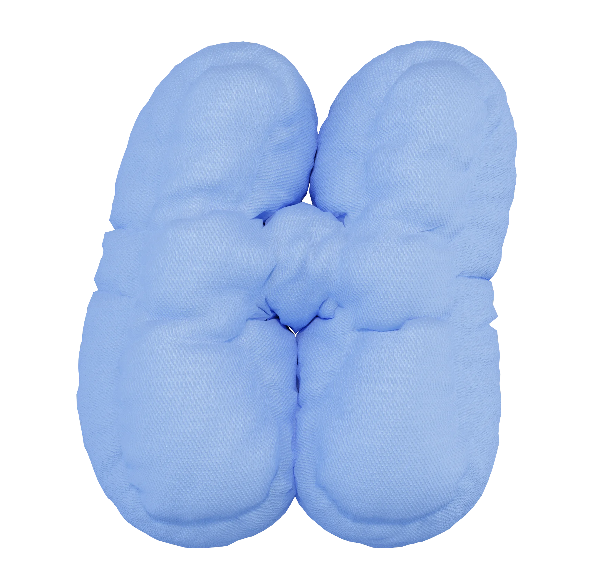
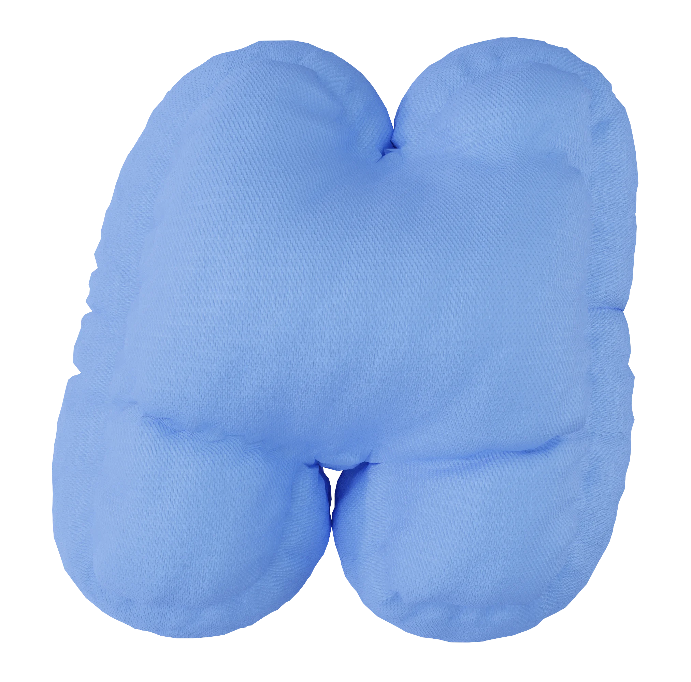
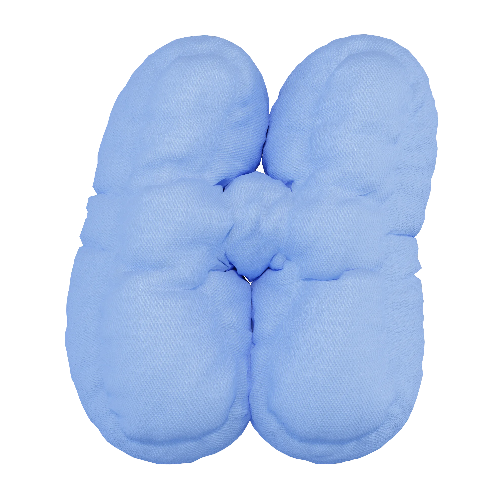
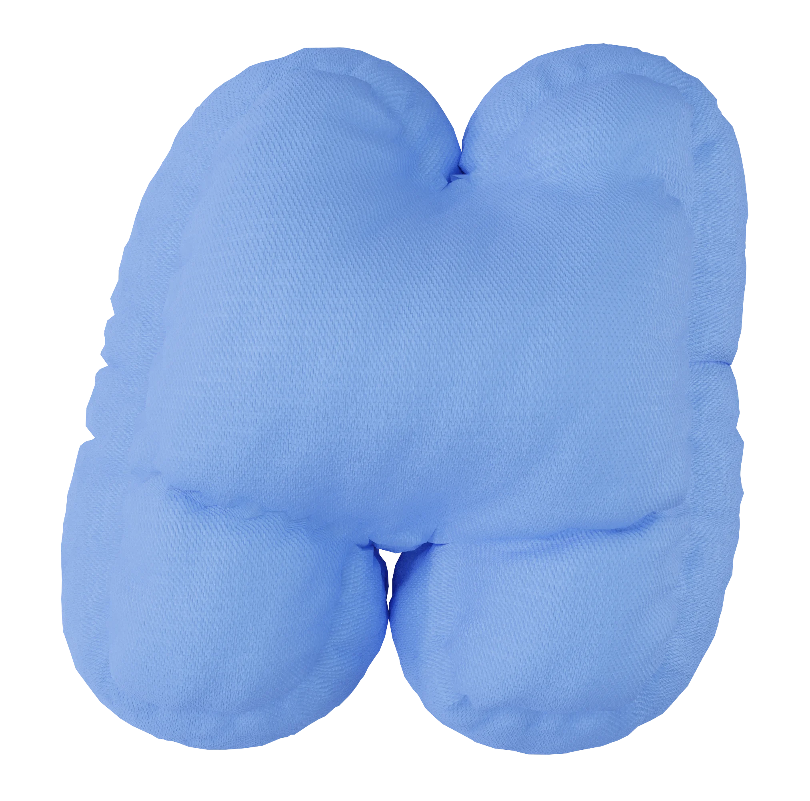

SNOK(S) — медиа
про
сон и сновидения
значения образов
в сновидениях
улучшение качества
сна и жизни
познание себя и раскрытие
своего внутреннего мира
о нас
Наш проект родился из желания
помочь людям соприкоснуться
с уникальным миром
подсознания.
узнать подробнее
П чему м е это снится?
Есть ли какой-то с ысл
в моих сн х?
 




Мы тоже размышляли над этим. Изучая психологию, культуру и научные подходы, мы пришли к выводу, что сновидения — это не случайные образы, а сон — крайне важная часть нашей жизни.

Наша миссия — создание платформы, которая поможет каждому разобраться в своих сновидениях и глубже понять природу самого сна.


факты
про сон
Наведи на круг, чтобы
узнать факт!
Обучение
Во время сна наши знания
переходят из кратковременной
памяти в долговременную
Нехватка сна
Хроническая нехватка сна ведёт
к расстройствам слуха, зрения,
повышенной тревожности,
нарушению обмена веществ,
нервным тикам и общей слабости
Время
Примерно четверть всей своей
жизни мы проводим во сне
Забывчивость
Через 5 минут после пробуждения
мы забываем до 50% снов, а через 10
минут — до 90%.
Цвета
Примерно 12% людей видят сны
только в черно-белом цвете.
сон — это время, когда мы
возвращаемся к себе
сон — это время, когда мы
возвращаемся к себе
статьи